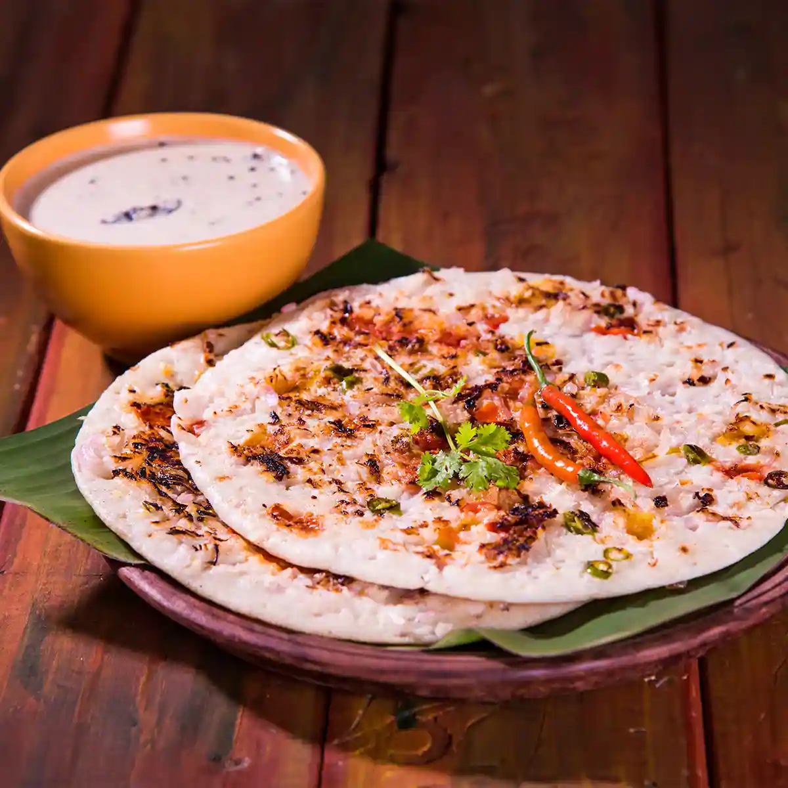

Onion Uttapam

South Indian onion uttapam is made from dosa batter, onions, green chillies, coriander and garam masala. uttapam deserves to be called the Indian pizza as it lends itself to several toppings, the most popular being crisp cooked onions. You may also try other combinations such as onion and tomatoes.
Ingredients
For sauteing cashews
- 2 Large onion chopped
- ½ cup Shallots /small onion if using
- 2 tablespoon Finely chopped carrot
- 2 tablespoon Finely chopped coriander
- 1 Green chilli chopped
- 2 teaspoon Oil per uttapam
- Ghee as needed optional
Instructions
- Finely chop the large onion and other ingredients needed. Slice the shallots very thin.
- Spoon 1 or 1 & ½ ladle full of the batter in hot greased dosa pan.
- Sprinkle generously the chopped onions fully covering the top. Place other ingredients like carrot, chilli if desired.
- Drizzle a teaspoon of oil . You can add few drops of ghee if desired. Cook in medium fame.
- After a minute or two, flip the uttapam and cook in low flame for 2 minutes or until the onions get golden brown and crisp.
Return to Main Page